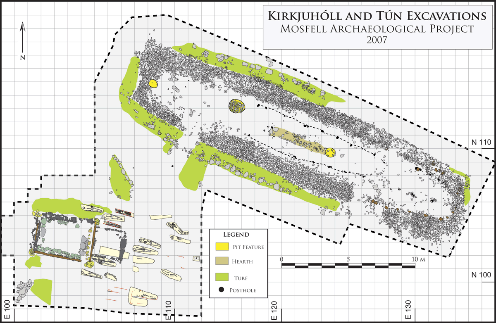
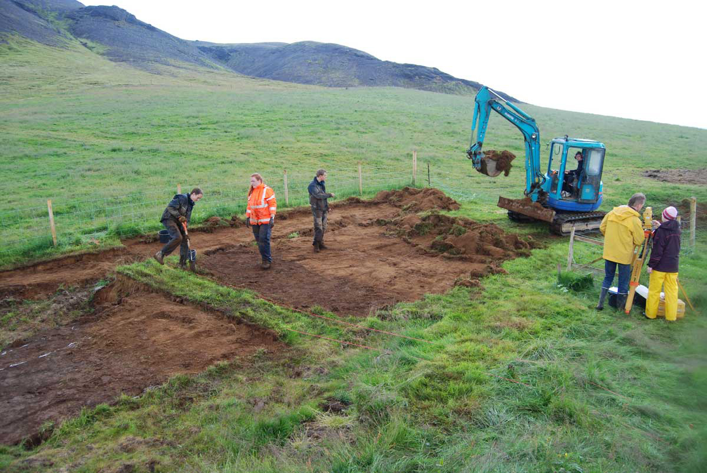
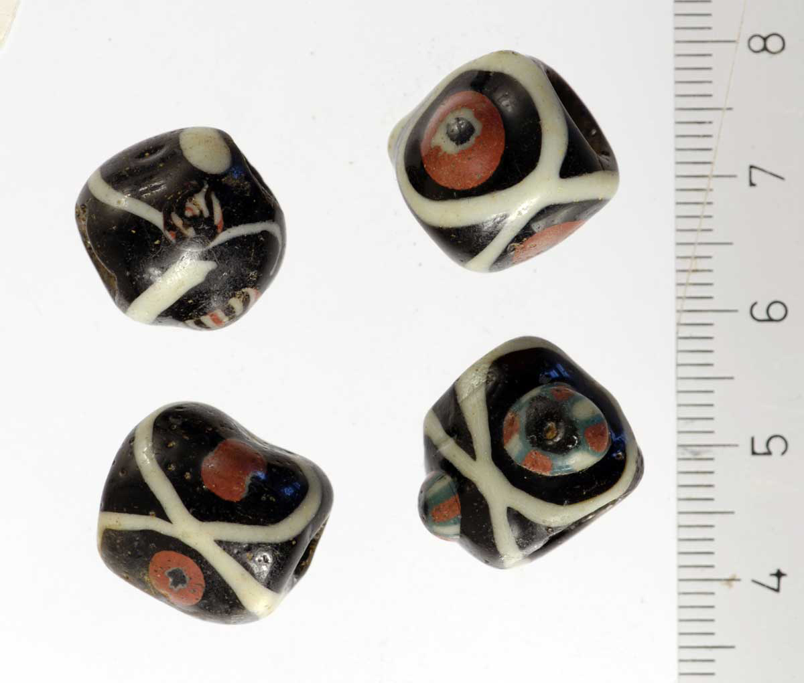
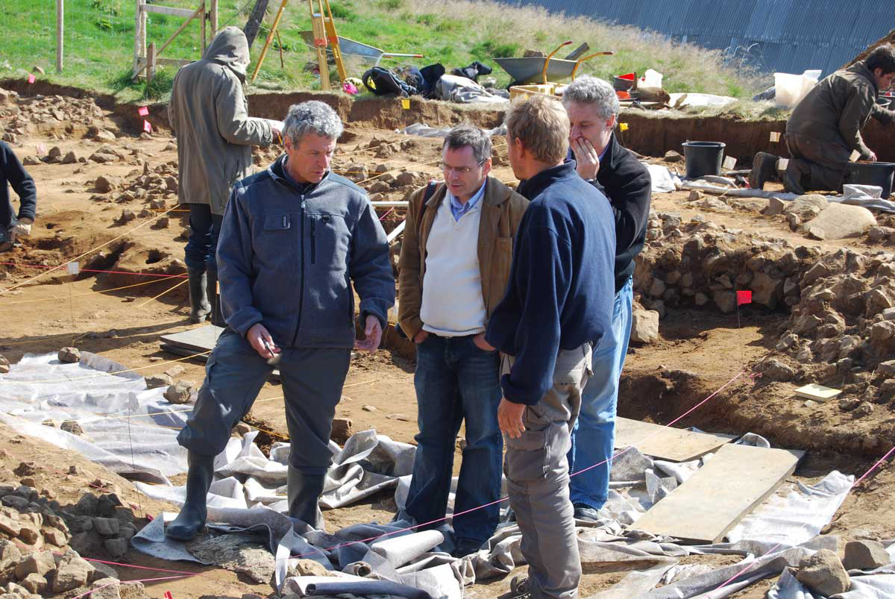

Archaeological Field Work | 2007 Field Season - Uncovering the Viking Longhouse
The 2007 excavations provided substantial new information about the Viking Age occupational history of the Hrísbrú site. Excavation of the longhouse revealed a well-preserved structure measuring approximately 28 x 10 m. Bow-sided walls, two doorways, benches, thick floor deposits, empty post holes, barrel pits, and a large central hearth were all identified and are in an excellent state of preservation.
The structure was first built between AD 870 and 930, and then partially rebuilt sometime after AD 930. The restructuring was not extensive and the longhouse seems to have retained much the same form throughout the period of its occupation. After the abandonment of the house, no subsequent structures were built directly on the site, but it is clear from the midden deposits dumped into the house that domestic occupation of an unknown scale continued at the Hrísbrú farm in the vicinity of the older longhouse.
Excavated strata flanked by the longhouse and the church revealed a stratigraphic connection between the two structures. In sum, the longhouse was built first and the church built later while the longhouse was still in use. In the graveyard, we believe that we have identified the extent of the burial area used surrounding the church, and have emptied the graveyard of human inhumations.
 A map of the Hrísbrú excavations after the 2007 field season.
 Deturfing at Hrísbrú.
 Beads found in the Hrísbrú longhouse imported from Turkmenistan.
 Jesse Byock, Guðmundur Ólafsson, and Davide Zori at the Hrísbrú longhouse excavation.